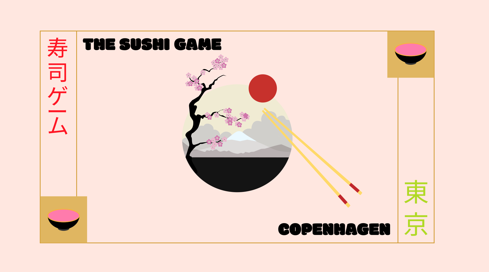

Game Animation
The Solution
Through learning design, I have honed my ability to create
visually engaging and user-centric
interactive experiences.
I’ve gained skills in conceptualizing game ideas, translating sketches into polished visuals,
and developing cohesive
design systems for games. My understanding of art principles like composition, character design,
and UI layout ensures
that each design not only captivates users but also enhances their interaction with the game.
These experiences have
strengthened my creativity, storytelling, and technical design expertise.
01 Concept Development
To create my game The Sushi Game I combined creativity, design principles, and technical expertise. The process began with an exploration of ideas, deeply inspired by illustrations and concepts from Japanese cooking books. These references sparked the initial vision for the game, leading to the development of a unique concept centered around sushi - combining the flat design (similar to looking down at the plate from above) with the fun atmosphere of a running sushi-restaurants.
To bring this idea to life, firstly I did desk research to develop moodboards and style tiles to define the visual direction of the game. Drawing heavily from the artwork of Japanese culinary art, these tools helped create a cohesive style that resonated with the game's theme.
02 Graphic Elements
Developing the graphic design for The Sushi Game was an integral part of creating its unique atmosphere. This phase focused on designing the user interface (UI) and game elements, with particular attention to background design. By employing atmospheric perspective, I was able to create depth and utilize compositional principles such as leading lines, contrasts, focal points, and the rule of thirds to craft visually compelling scenes.
For the illustrations, I drew inspiration from flat design styles seen in games like Two Dots and the artwork of Jade Purple Brown. The vibrant and playful color palette, coupled with a fun and engaging font, reinforced the game's energetic and whimsical tone.
Additionally, I integrated traditional Japanese illustration motifs, such as Mount Fuji in the background, the iconic red Japanese symbol, and the waving cat, weaving these cultural elements into the UI, background scenes, and game illustrations. These choices helped evoke the perfect atmosphere for the game, striking a balance between modern design and traditional Japanese artistry.

03 Storytelling
For the character design, I focused on leveraging storytelling principles to create engaging and meaningful visuals, inspired by culture - such as the film 'Lost in Translation' and my favorite Japanese restaurant 'Bento' that lies in my neighbourhood. I used shapes and colors to reinforce the personality and role of each element within the game.
The "good" elements were crafted to be colorful and look tasty - as when looking at a menu card - evoking a sense of easy-going and fun vibe, making it simple for players to distinguish them as safe or beneficial through the design.
Conversely, the "bad" elements were intentionally designed to be confusing - as if you're a tourist in Tokyo, who does not understand all the signs. By incorporating Japanese letters that are hard to understand (if not Japanese), I created a sense of mystery and challenge, emphasizing their role as conflict within the gameplay. These visual design choices not only enhanced the storytelling but also strengthened the overall theme of the game, blending modern flat design with subtle narrative cues to guide the player's experience.
Sound atmosphere
Chef's greeting
04 Implementing
To bring the game to life, I combined CSS animations and JavaScript. The process began with planning the game mechanics using a UML activity diagram, which provided a clear overview of the game's flow, logic, and decision points.CSS animations played a significant role in enhancing the visual appeal of the game. Keyframes were used to define smooth transitions and movements, such as floating objects and dynamic interactions triggered by the player.
In JavaScript, I implemented various techniques to handle interactivity and game mechanics. Functions and methods like addClass and removeClass to adjust the visual states of elements based on the player's actions. Variables tracked essential game data, ensuring responsive gameplay.
Event listeners, including load, click, and animationend, were crucial for interactivity. To maintain variety and unpredictability, I used Math.random to generate random positions and sequences for game elements, ensuring that each round felt fresh and challenging. The integration of the UML activity diagram with CSS animations and JavaScript provided a solid foundation for the game, blending design, functionality, and gameplay into a cohesive and enjoyable experience.